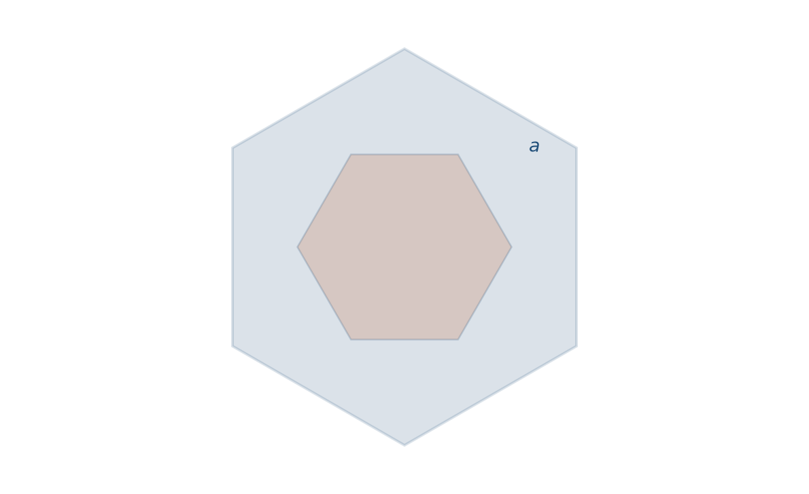
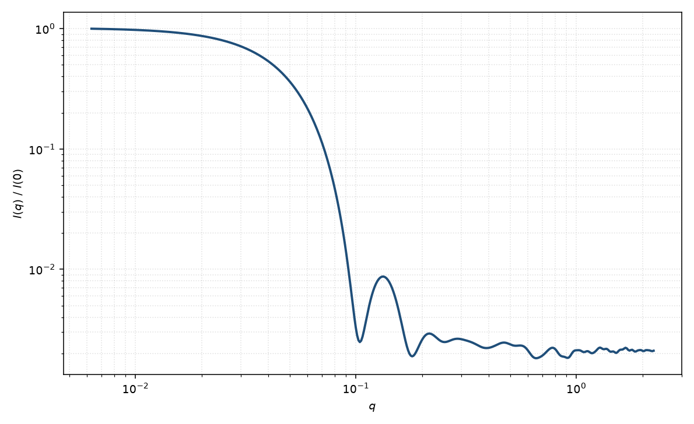

截角八面体
truncated octahedron
适用场景
Archimedean 截角八面体：6 个正方形面与 8 个正六边形面，是 FCC 金属纳米晶常见的 Wulff 外形。适用于金、银、铜及部分氧化物的截角八面体胶体。
未截角的正八面体接近超球 $p=1/2$ 极限；完全截角后更接近球，振荡加深、相位移动。若粒子已是圆角立方，用超球（$p>1$）或平行六面体更直接。
物理图像
标准坐标下，截角八面体是立方 $|x|,|y|,|z|\le 2s$ 与八面体 $|x|+|y|+|z|\le 3s$ 的交集。振幅由多面体闭式或体内积分给出。体积 $V=8\sqrt{2}\,a^3$ 视边长约定而定；本页用尺度 $s$ 使最短面到中心的距离为 $2s$。
示意图 $I(q)$ 为该凸体内均匀点的 Debye 粉末平均。相对正四面体，等轴性更高，低 $q$ 更接近球的 Guinier。
示意图


核心公式
出发点
稀释、取向无规的均匀粒子，相干散射振幅是特征函数的傅里叶变换
$$F(\mathbf{q})=\Delta\rho\int_V \mathrm{e}^{i\mathbf{q}\cdot\mathbf{r}}\,\mathrm{d}^3r.$$Archimedean 截角八面体是立方与正八面体的交集
$$V=\{\mathbf{r}:|x|,|y|,|z|\le 2s,\;|x|+|y|+|z|\le 3s\}.$$顶点为 $(0,\pm s,\pm 2s)$ 及其坐标全排列。相邻顶点间距 $a=s\sqrt{2}$ 即棱长。
推导
与任意凸多面体相同：$\nabla\cdot(\mathbf{q}\,\mathrm{e}^{i\mathbf{q}\cdot\mathbf{r}})=i q^2\mathrm{e}^{i\mathbf{q}\cdot\mathbf{r}}$ 把体积分降到 14 张面上（6 正方形 + 8 正六边形）；面上再化为边积分，直边给出 $\mathrm{sinc}$：
$$F(\mathbf{q})=\frac{\Delta\rho}{i q^2}\sum_f(\mathbf{q}\cdot\hat{\mathbf{n}}_f)\,f_f(\mathbf{q}),$$ $$f_f(\mathbf{q})=\frac{1}{i q_\parallel^2}\sum_{j\in\partial f}(\mathbf{q}_\parallel\cdot\hat{\boldsymbol{\nu}}_j)|\mathbf{L}_j|\,\mathrm{e}^{i\mathbf{q}\cdot\mathbf{c}_j}\,\mathrm{sinc}\!\left(\frac{\mathbf{q}\cdot\mathbf{L}_j}{2}\right).$$体积也可由正八面体 $|x|+|y|+|z|\le 3s$（体积 $4(3s)^3/3=36s^3$）减去六个方锥得到：锥高 $s$、底为对角线 $2s$ 的正方形（面积 $2s^2$），单锥体积 $\frac{1}{3}\cdot 2s^2\cdot s=\frac{2}{3}s^3$，故
$$V=36s^3-6\cdot\frac{2}{3}s^3=32s^3=8\sqrt{2}\,a^3.$$粉末平均等价于 Debye 双重体积分（图中 $I(q)$ 用此求值）。稀释 $I(q)=n(\Delta\rho)^2 V^2 P(q)+B$。
低 $q$ 与渐近
正八面体 $|x|+|y|+|z|\le A$ 的 $R_g^2=3A^2/10$（$A=3s$ 时 $27s^2/10$）。扣除六个方锥（各对原点的 $\int r^2=53 s^5/15$）后
$$R_g^2=\frac{19}{8}s^2=\frac{19}{16}a^2.$$因而 $P=1-q^2 R_g^2/3+O(q^4)$。Guinier 指数形式在 $qR_g\lesssim 1$ 可用。相对正四面体更等轴，低 $q$ 更接近球。
大 $q$ 尖锐 {100}/{111} 面给出 Porod $q^{-4}$。高度截角后振荡加深、相位接近球；要与球或多分散球分辨，须看到振荡相位并有电镜的方/六边面。
参数表
| 参数 | 符号 | 含义 | 单位 | 典型范围 |
|---|---|---|---|---|
| 尺度 | $s$ 或 $a$ | 截角八面体边长或外接尺度 | Å 或 nm | 20–1000 Å |
| 欧拉角 | $\theta,\phi,\psi$ | {100}/{111} 面相对光束（二维） | 度 | 由取向分布约束 |
| 衬度 | $\Delta\rho$ | 均匀体相对溶剂 SLD 差 | Å$^{-2}$ | 组成决定 |
| 标度 / 本底 | $\mathrm{scale}$, $B$ | 前置因子与本底 | 与强度单位一致 | 实验相关 |
拟合注意
等轴截角八面体在有限 $q$ 上接近球加轻微多分散。要确认面型，需要看到振荡相位与电镜的方/六边面，而不是只看 $R_g$。
取向：粉末通常够用；衬底上 {111} 贴附会给出六重对称。磁性：{100} 与 {111} 死层可以不同；磁 SLD 与核 SLD 分通道。尺寸多分散优先于再引入额外截断参数。
相近模型
参考文献
- Croset, B. Form factor of any polyhedron: a general compact formula and its singularities. J. Appl. Cryst. 2017, 50, 1245–1255. DOI: 10.1107/S1600576717010147
- Wuttke, J. Numerically stable form factor of any polygon and polyhedron. J. Appl. Cryst. 2021, 54, 580–587. DOI: 10.1107/S1600576721001710